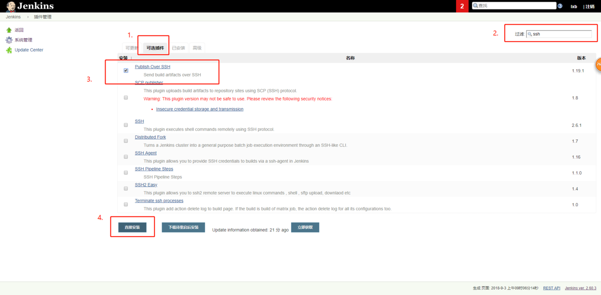
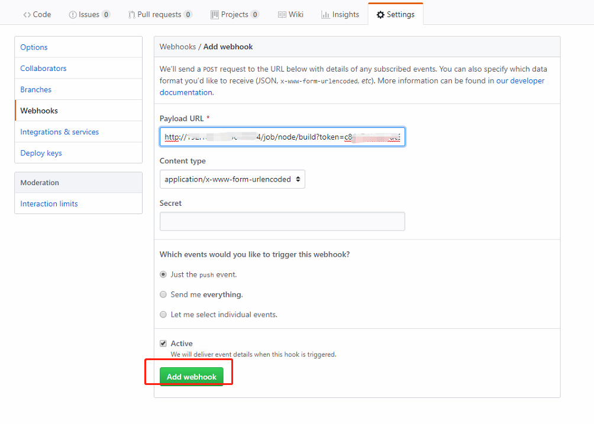

Docker 是一个开源的应用容器引擎，让开发者可以打包他们的应用以及依赖包到一个可移植的容器中，然后发布到任何流行的 Linux 机器上，也可以实现虚拟化。容器是完全使用沙箱机制，相互之间不会有任何接口
本次案例基于CentOS 7系统
适合有一定docker使用经验的人阅读
适合有一定linux命令使用经验的人阅读
1、docker部分
1.1、docker简介
Docker 是一个开源的应用容器引擎，让开发者可以打包他们的应用以及依赖包到一个可移植的容器中，然后发布到任何流行的 Linux 机器上，也可以实现虚拟化。容器是完全使用沙箱机制，相互之间不会有任何接口
1.2、docker架构
简单的说，docker就是一个轻量级的linux系统。Docker 容器通过 Docker 镜像来创建。容器与镜像的关系类似于面向对象编程中的对象与类。docker架构如图所示：
1.3、docker虚拟机管理命令
1.4、安装docker
- 更新软件库
1
yum update -y
- 安装docker
1
yum install docker -y
1.5、启动docker服务
- 启动docker服务
1
service docker start
- 其它相关命令
1
2service docker restart // 重启docker服务
service docker stop // 停止docker服务2、node部分
可以通过koa框架随便写一个hello-world项目，然后在项目的根目录下新建一个Dockerfile文件
Dockerfile 是一个文本文件，其内包含了一条条的指令(Instruction)，每一条指令构建一层，因此每一条指令的内容，就是描述该层应当如何构建。
笔者自己的Dockerfile文件配置信息如下，熟悉docker的人可以自行配置
1 | # Dockerfile |
将该项目发布到github上，为之后的jenkins部署做前提准备
3、jenkins部分
- 查询jenkins镜像
1
docker search jenkins
拉取最新的jenkins镜像
1
docker pull jenkins:latest
启动jenkins
1
sudo docker run -d -u 0 --privileged --name jenkins_node1 -p 49003:8080 -v /root/jenkins_node1:/var/jenkins_home jenkins:latest
命令解析：
- -u 0
指的是传入root账号ID，覆盖容器中内置的账号
2. -v /root/jenkins_node1:/var/jenkins_home
指的是 将docker容器内的目录/var/jenkins_home映射到宿主机
/root/jenkins_node1目录上
- –name jenkins_node1
将容器命名为 jenkins_node1
- -p 49003:8080
端口映射，将容器的8080端口映射到宿主机的49003端口
- –privileged
赋予最高权限
- 整条命令的意思
运行一个镜像为jenkins:latest的容器，命名为jenkins_node1，使用root账号覆盖容器中的账号，赋予最高权限，将容器的
/var/jenkins_home映射到宿主机的
/root/jenkins_node1目录下，映射容器中8080端口到宿主机49003端口
- 查看jenkins
执行完成后，等待几十秒，等待jenkins容器启动初始化。
可以查看宿主机
/root/jenkins_node1下是否多了很多文件
到浏览器中输入 localhost:49003 查看jenkins是否启动成功
看到如下界面说明启动成功：
- 获取密码
1 | cat /root/jenkins_node1/secrets/initialAdminPassword |
复制输出的密码，粘贴到页面中，点击continue会进入到下面这个页面
点击安装
等待安装完成，进入到创建管理员账号界面
输入账号密码信息后点击保存（信息要填完），来到首页
配置jenkins，进入系统管理页面，管理插件

选择 ssh插件，

直接安装，等待安装完成，回到首页，
来到 系统管理 -> 系统配置
拖到最下Publish over SSH这
选择高级，输入服务器IP，用户名，密码，然后点击 Test Configuration
显示 Success 则说明配置没问题。然后保存，回到首页
新建一个项目
输入项目名称
选择源码管理，使用git管理，输入github仓库地址，添加github用户

完成来到选择构建环境，
执行的命令
1 | sudo docker stop nodeapp || true \ |
保存后，点击立即构建
构建成功后，可以在宿主机的目录/root/jenkins_node1/workspace/node下看到你的项目文件了
在浏览器输入 docker服务器地址 localhost:3000 即可访问到页面信息
启动失败的，可以查看日志来确定一下失败的原因
1 | docker logs nodeapp |
4、jenkins + github自动部署
如果想本地代码提交push到github后，jenkins自动拉取最新代码重新部署，请继续看
- 在首页点击用户
首页 -> 用户 -> root

- 点击设置 -> show API Token
复制API Token 里面的值
返回到首页 -> node -> 配置 -> 构建触发器
粘贴到身份验证令牌 中
- 登陆到你的github项目页面
打开 Setting -> Webhooks -> Add webhooks
- 添加 webhooks

- 修改jenkins的安全策略
jenkins首页，选择 系统管理–>Configure Global Security(系统设置下面那个) 进行如下设置
至此，已完成 git push 后，jenkins 自动构建自动部署。
5、docker的常用命令
对docker比较感兴趣的人可以了解一下，继续学习
镜像相关
- 查询镜像
1
docker search [name]
- 拉取镜像
1
docker pull [name]
- 导入镜像
1
docker load < /home/node.tar.gz
- 导出镜像
1
docker save > /home/node.tar.gz
- 查询所有镜像
1
docker images
- 删除镜像
1
docker rmi [name]
- 修改镜像名
1
docker tag docker.io/node node
容器相关
- 启动
1
2
3
4# 运行并进入交互模式
docker run -it --name myjava java bash
# 在后台运行
docker run -d --name myjava java - 端口映射
1
docker run -it --name myjava -p 9000:8085 -p 9000:8086 java bash
- 目录映射
1
docker run -it --name myjava -v /home/project:/soft --privileged docker.io/node bash
- 进入后台运行的容器
1
docker exec -it name bash
- 自动重启
1
docker run --restart=always -it --name myjava -p 9000:8085 -p 9000:8086 java bash
- 暂停容器
1
docker pause node
- 停止暂停容器
1
docker unpause node
- 停止容器
1
docker stop node
- 启动容器
1
docker start -i node
- 查看容器
1
docker ps -a
docker网段相关
- 创建网段
1
docker network create net1
- 查看网段信息
1
docker network inspect net1
- 删除网段信息
1
docker network rm net1
6、总结
笔者自己最近学习node，故想尝试一下通过Docker+jenkins来实现这个自动化部署的流程，自己踩了一天坑，总算是配置成功了。之前是使用pm2来管理node项目，以及使用pm2来自动化部署node项目的，有兴趣的可以去看一下。使用pm2自动化部署node项目.算是给自己做个总结笔记。写的不好的地方，望指出。
{kind=link}
公众号
欢迎关注我的公众号“码上开发”，每天分享最新技术资讯。关注获取最新资源